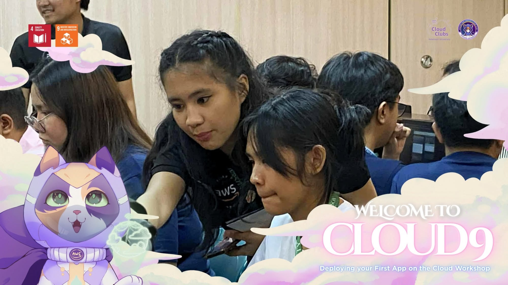
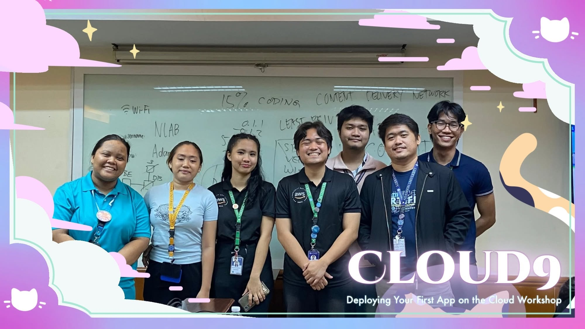

hi, i'm darla
i build things because wondering how something works is usually not enough.
I wasn't always a tech person. Growing up, I loved biology, environmental science, and the humanities, but I was also the kid who spent way too long figuring out why the printer stopped working.
That changed when a classmate presented a robotics and IoT project and I realized people could actually build things like that. An Arduino class gave me my first real taste of tech, and I slowly found my way in from there.
I was still figuring out where I fit. I didn't have many women in tech to look up to, and learning the technical side was often frustrating. Meanwhile, I kept doing what I already loved, from biology competitions to head dancing in the UAAP.
Looking back, all of that shaped how I work now.

College is where I found my place in tech. I joined the AWS Student Builder Group to learn and meet other builders, and Kate Callao recruited me and helped me grow into a leadership role.
It showed me how much community matters early in a career. People willing to teach and make room for others changed my path, and I want to build that kind of space for others.


Today I lead AWS SBG and work across growth research, design, automation, and community building, usually following whatever rabbit hole catches my attention.
Most of what I build is for people tired of doing the same task twice. I still like building with others and seeing where a little curiosity leads.
- manga
- niche anime corners
- fanfiction
- community building
- design
if you want to talk, email is easiest.
darlanovasumanting06@gmail.com